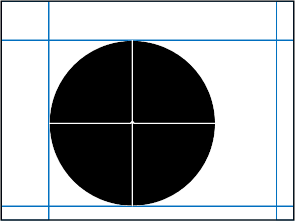

This is a continuation of a tutorial. If you landed here by accident, you can get back to the start of the tutorial here:
Additional Properties Sheet
Part 4a – Introducing the Additional Properties Sheet
A good way to start this process is to mock up what you might need, then break it down into parts. As taken from
here,
we would need to create something like this image for this extension.

Part 4b – The Positioning Visualizer
It will represent the component at a 1:1 scale.
It will draw a black rectangle, indicating the borders of the component
It will draw a black rectangle, indicating the borders of the component
It will draw the padding margins as blue lines, within the component.
It will represent the potential arc of the gauge (from -180° to +180°) as a black circle.
This circle will be positioned as the actual gauge within the canvas, allowing the designer to see where the
padding margins are and how these padding margins affect the size and positioning of the gauge.
There will be white crosshairs, centered on the centroid of the circle, allowing the designer to easily see
there the origin of the arc is.
[more stuff about the parts]
Set up JavaScript
four padding properties, underscore means local copies
stroke thicknesses, including height and width as placeholders, these are defined specially in DS SDK
//Viz definitions
var lineThickness = 2;
//Height and Width Proxies
widthProxy = 200;
heightProxy = 200;
Next, we clear any SVG elements from the HTML file’s content div and re-insert one. While we’re at it,
we’ll declare the PI variable
// Clear any existing content. We’ll redraw from scratch.
d3.select("#content").selectAll("*").remove();
var vis = d3.select("#content").append("svg").attr("width", "100%").attr("height", "100%");
var pi = Math.PI;
Part 4c – Putting the Positioning Visualizer into the Additional Properties Sheet
Part 4d – The APS Interacting with the Canvas
Scripting API
Part 5 – Making your Component Scriptable
Data Binding
Part 6a – Adding Property Binding: Preparation
Part 6b – Adding Property Binding
Advanced Property Types Introduced in 1.6
Part 7a – Property Arrays and Complex Properties
Part 7b – Using an Object Array to Create Conditional Formatting
Advanced Polish: Guide Lines and Arcs
Part 8a – Drawing Radial Guide Lines and Arcs with D3
Part 8b – Adding Radial Guide Lines and Arcs to the Gauge Component
Advanced Polish: Adding an Indicator Needle
Part 9a – Drawing an Indicator Needle (D3)
Part 9b – Drawing an Indicator Needle in the Component
Advanced Polish: Animations
Part 10a – The “data” in Data Driven Documents
Part 10b – Transitions in D3
Part 10c – Transitions in the Component
Advanced Polish: Dynamic Text Callouts
Part 11a – D3 and the SVG Text Element
Part 11b – Dynamic Text Positioning with D3
Part 11c – Text callouts in the Component
Advanced Polish: Custom Component CSS Styling
Part 12 – Cascading Stylesheets in Custom Components
Infrastructure: RequireJS
Part 13 – RequireJS
Creating an Installer Zip File
This isn't really crucial to the comparison, but it's an important step in the process. Once you've finished creating
your extension, you need to make it available for use! You need to create an installer file.
Part 14 – Zipit ‘n Shipit
Create a Feature Project (as a Project in Eclipse)
File->New->Feature Project or File->New->Other and search for Feature Project.
Assign a Project Name. The Feature ID and Feature Name will be automatically assigned based on the Project Name.
When it prompts you to switch perceptive, Yes.
Select the Included Plug-Ins tab, uncheck "Unpack the plug-in archive after the installation," and save.
Add a Category to your Feature Project
File->New->Category Definition or File->New->Other and search for Category Definition.
Select the parent folder of your project.
When it prompts you to switch perceptive, Yes.
Select the Included Plug-Ins tab, uncheck "Unpack the plug-in archive after the installation," and save.
Create a Deployable Feature
Right click on the Feature Project and click Export.
Select Deployable features.
Add a destination - for simplicity, choose one on your computer.
Under the Options tab, click Browse and select the category.xml file you just created in the last section.
This guide was written as an assignment for Oregon State's CS 290 course. I selected
this topic because I am a business intelligence developer working with SAP's platforms
including BOBJ (BusinessObjects). My team is fairly new within the company and
we are quickly learning our limitations for graphical representations. I plan to
leverage what I learned from researching and writing this in development of
extensions for use with Design Studio. For those who are unfamiliar, Design Studio makes
heavy use of CSS and JavaScript.